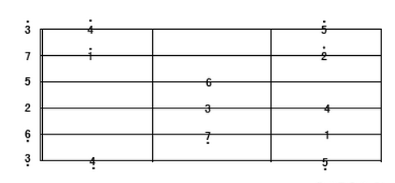

乐理知识学习汇总
音乐三要素（音色 节奏 旋律） 节奏最重要
全音半音
C调的1234567 基本音
倍低音 低音 高音 倍高音（点在上下 进行区分）
调: CDEFGAB
练和弦手指疼是常态
左手按品的姿势
拇指指肚按住背部 和食指对齐 便于发力
打拍子(需要结合节拍器将自己的节奏感先练好)

和弦转化
和弦切换的时候 需要 先把提前按好品和弹出弦
歌词踩点的难度
刚开始节奏感不够强，记清楚每个字对应的弦，硬凑凑多了就会养成节奏感

和弦发声要包含下面的1 3 5
和弦的根音就是声音最低那个弦发出的声
E(E major) Em(E minor)
搞音乐的同事 告诉我我的节奏感方面需要好好加强
（日常走路的时候 都可以打着拍子 加强自己的节奏感）
手脚节奏会乱的情况下 手脚的动作分开练习
- 弹奏的时候 节奏是最重要的 不能停下来 弹错就弹错 要重视整体体验
- 弹错的情况下 要注意调整 修改回来